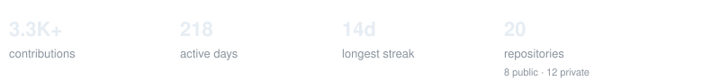
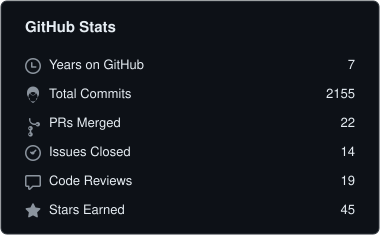
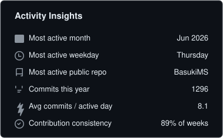
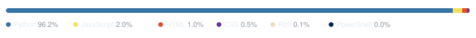
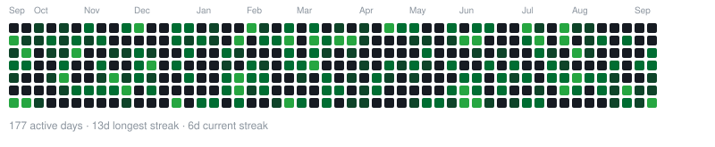

engineer · builder · finance student
Building systems. Studying markets.
Exploring what happens when the two meet.
Shenzhen, China
currently → Master's in Finance @ Peking University HSBC Business School (PHBS)
I'm a computer engineer from Nepal — I started out building backend systems, products and software around real operational problems.
I'm now pursuing a Master's in Finance at Peking University HSBC Business School in Shenzhen, while exploring markets, quantitative finance and the places where computation meets finance.
Fleet resource planning and operational software for a logistics business.
fleet operations accounting inventory analytics
An end-to-end experiment in pushing the limits of AI in software engineering, exploring how much of the software lifecycle can be designed, built, tested, refined, and automated with AI as an active engineering collaborator.
ai software engineering experimentation automation` `developer tooling
Connected product and operations work under Iruka Technologies, covering e-commerce, inventory, vendor operations, fulfilment, warehouse workflows, dispatch, tracking, replenishment, and automation.
e-commerce operations inventory fulfilment automation
quant finance · markets · econometrics · risk
fintech · market microstructure · investment research · data
Active experimentation around how AI can improve software development, engineering workflows, automation, code assistance, system design, debugging, and developer productivity.
developer productivity · code assistance · workflows · system design · debugging
things I've been building lately.





Languages reflect code composition across public & private repositories, not proficiency.
Ideas worth thinking through.
Notes on finance, technology, markets, engineering — and whatever else I find worth writing about.
Website ↗
Writing ↗
GitHub ↗
Email ↗
say hello → contact@sajagsilwal.com